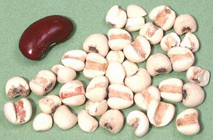

Job's Tears

[Coix, Coixseed, Adlay, Adlal; Hot bo bo (Viet); Yuuki hatomugi (Japan);
Coix lacryma-jobi var. ma-yuen | Rosary beads:
Coix lacryma-jobi var. lacryma-jobi ]
Two varieties of the is tropical grass are grown, one as a grain and
the other for hard shelled beads. While native to Southeast Asia and grown
there in mountainous regions, this plant is now also grown in the southern
United States and in the tropical Americas. It is usually pearled except
in Japan where it is used "brown". This grain is used in soups and to make
teas and beverages, including distilled alcoholic beverages. In the Asian
markets here in Los Angeles, and I presume elsewhere in North America, it
is always packaged as "Pearl Barley", though it is easily recognized from
its large size and deep groove on one side.
More on Other Grains.
This grain has a light pleasant flavor somewhere between barley and
wheat and with a unique aromatic twist. It's resistance to overcooking
makes it an excellent ingredient in soups.
Buying:
Job's Tears can be found in most markets serving
Southeast Asian and Korean communities. They're usually packed in small
plastic bags of about 12 ounces, always titled "Pearl Barley". These will
be found with the other grains and beans.
Storing:
This pearled grain is subject to rancidity and
should not be stored long at room temperature, perhaps 4 months in a
sealed container away from heat and light.
Cooking:
Simmered, this grain is done at about 45
minutes, but will still have a slightly chewy center. With another hour
of simmering the grains remain pretty much unchanged, still a bit chewy
in the center and holding their shape well. One cup of dried grains will
yield 3 cups cooked, so you'll need to start with about 4 cups of
water.
gr_jobz 100313 - www.clovegarden.com
©Andrew Grygus - agryg@clovegarden.com - Photos on this
page not otherwise credited are © cg1 -
Linking to and non-commercial use of this page permitted